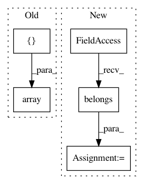

a01a68f47714cfc9e7f06d0b53589d0ad16b107c,tests/test_matrices.py,TestMatrices,test_belongs,#TestMatrices#,202
Before Change
self.assertAllClose(result, expected)
def test_belongs(self):
base_point = gs.array([
[1., 2., 3.],
[0., 0., 0.],
[3., 1., 1.]])
result = self.space.belongs(base_point)
expected = True
self.assertAllClose(result, expected)
After Change
result = self.space.belongs(base_point_square)
expected = True
self.assertAllClose(result, expected)
result = self.space_nonsquare.belongs(base_point_square)
expected = False
self.assertAllClose(result, expected)
result = self.space.belongs(base_point_nonsquare)
In pattern: SUPERPATTERN
Frequency: 3
Non-data size: 5
Instances
Project Name: geomstats/geomstats
Commit Name: a01a68f47714cfc9e7f06d0b53589d0ad16b107c
Time: 2021-03-19
Author: nmiolane@gmail.com
File Name: tests/test_matrices.py
Class Name: TestMatrices
Method Name: test_belongs
Project Name: geomstats/geomstats
Commit Name: 2c7981fb9bfd39b414da82897b61b86a10e51dcb
Time: 2020-04-21
Author: ninamio78@gmail.com
File Name: tests/test_general_linear.py
Class Name: TestGeneralLinearMethods
Method Name: test_belongs
Project Name: geomstats/geomstats
Commit Name: e26a3f778117e866eb1903a0472a7353489c945d
Time: 2021-03-17
Author: nicolas.guigui@inria.fr
File Name: geomstats/geometry/stiefel.py
Class Name: Stiefel
Method Name: belongs